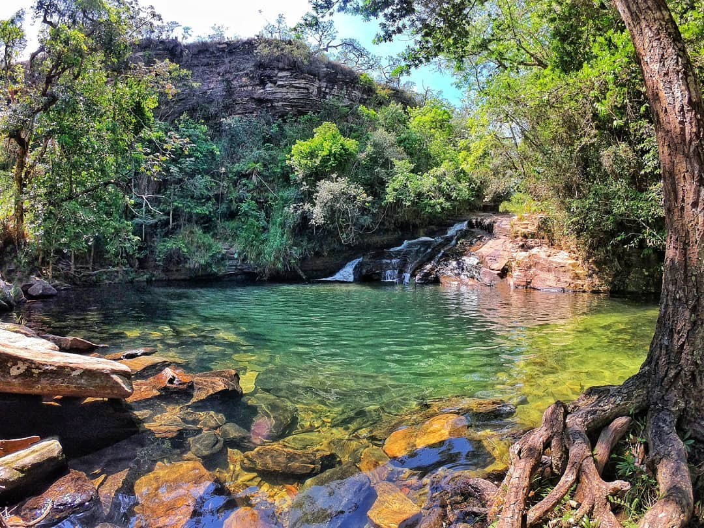
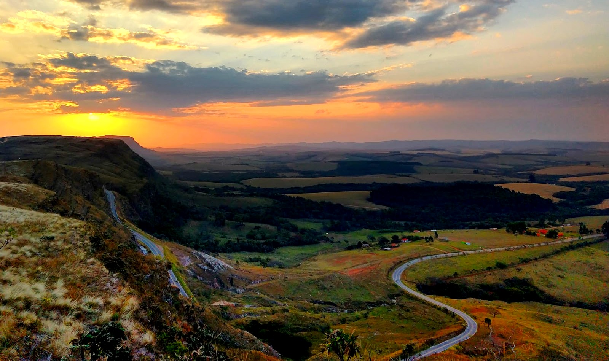
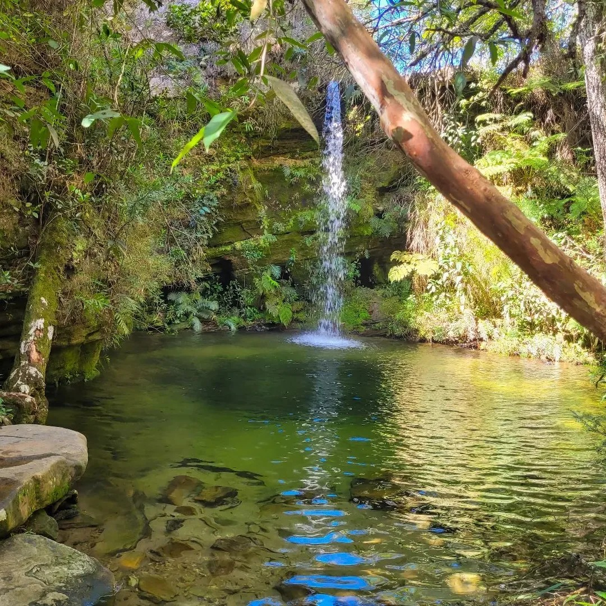
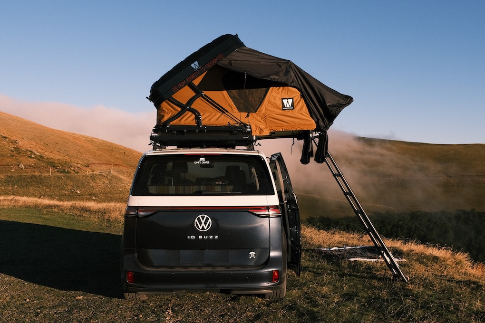
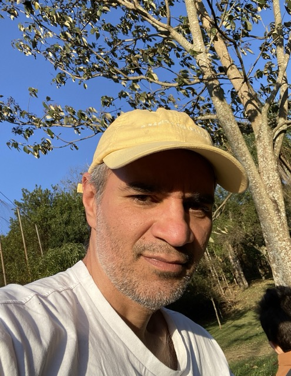

Choose only one master: nature.
Rembrandt van Rijn sabia bem disso. A natureza como mestre absoluto, guia silencioso de tudo o que criamos e somos.
Continuar lendoUm diário de estrada
Vai começar a viagem.
O caminho é mais importante do que o destino final.

Em algum lugar pelo mundo
Rembrandt van Rijn sabia bem disso. A natureza como mestre absoluto, guia silencioso de tudo o que criamos e somos.
Continuar lendo
Albert Einstein
Continuar lendo
O visual antigo era muito chinfrim, então decidi repaginar totalmente. Agora, começa a ficar divertido.

Bem-vindo ao blog. O caminho é mais importante do que o destino final. Para começar, o poema Desiderata de Max Ehrmann, 1927.
Continuar lendo